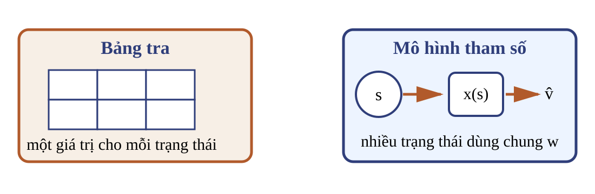
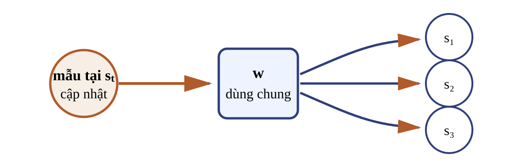
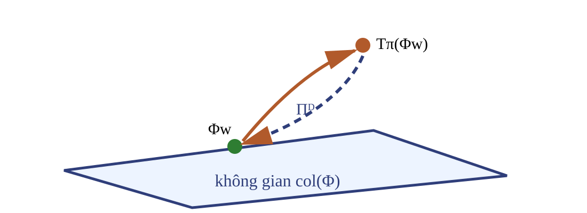
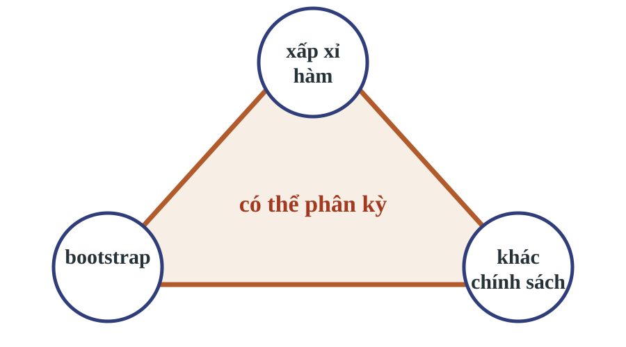

Đặc trưng tuyến tính, Monte Carlo, sai phân thời gian và điều khiển
Bài 07 · Học tăng cường · Học kỳ 1, 2026–2027
Cầu nối từ bài toán dạng bảng
Đã có
Bài 06 đã xây dựng cập nhật MC và SARSA dạng bảng cùng các điều kiện phân tích riêng; tiên quyết gồm cả Q-learning dạng bảng.
Thay đổi
Mỗi ô của bảng được thay bằng dự đoán dùng chung vector tham số $w$.
Kết quả dạng bảng không tự động chuyển sang xấp xỉ hàm.
Kết quả học tập
Biểu diễn
Định nghĩa $\hat v(s,w)$, $\hat q(s,a,w)$ và chọn đặc trưng có miền, kích thước rõ.
Cập nhật
Phân biệt gradient Monte Carlo (MC) với bán gradient sai phân thời gian (TD).
Điểm cố định
Giải thích phương trình Bellman chiếu và các giả thiết đi kèm.
Điều khiển
Triển khai SARSA, phân biệt đích Q-learning và nhận diện bộ ba bất ổn.
Bảng tra không mở rộng theo không gian trạng thái
Không gian liên tục có vô số trạng thái; không thể cấp một ô cho mỗi trạng thái.
Không gian lớn làm bộ nhớ và số mẫu tăng theo số ô.
Hai trạng thái gần nhau vẫn không chia sẻ thông tin nếu dùng bảng độc lập.
Dữ liệu RL có tương quan theo lượt và phân phối truy cập thay đổi khi chính sách thay đổi, khác hồi quy có giám sát với mẫu iid.
Câu hỏi: một cập nhật ở trạng thái chưa từng gặp giúp gì cho trạng thái lân cận trong bảng tra?
Không giúp gì nếu hai trạng thái dùng hai ô khác nhau.
Một vector tham số thay cho nhiều ô

$d$ tham số có thể dự đoán cho nhiều trạng thái, kể cả trạng thái chưa xuất hiện đúng dạng trong dữ liệu.
Một cập nhật đổi hai dự đoán

Cho $x(s)=(1,1)^T$, $x(s')=(1,0{,}5)^T$, $w=(0,0)^T$ và sai số mẫu giả định $e=2$. Một mẫu tại $s$ tạo $\Delta w=\alpha e\,x(s)=0{,}1(2)x(s)=(0{,}2,0{,}2)^T$.
$G_t$ không phụ thuộc $w_t$, nên đây là gradient đầy đủ của mất mát mẫu.
MC tuyến tính: thuật toán và kiểm tra
Đầu vào: $\pi$ cố định, $x$, $\gamma$, lịch $\alpha_n$, số lượt $K$. Đầu ra: $w$.
Mỗi lượt: sinh quỹ đạo đến khi kết thúc; tính $G_t$ ngược từ cuối lượt; theo quy tắc mọi lần ghé, cập nhật tuần tự $e_t\leftarrow G_t-x(S_t)^Tw$ $w\leftarrow w+\alpha_n e_t x(S_t)$
Câu hỏi: sau ví dụ trước, dự đoán tại trạng thái có đặc trưng $(1,0)^T$ đổi bao nhiêu?
Tăng $0{,}8$.
Khi nào MC–SGD có bảo đảm
Bài toán cố định
Giữ $\pi$, đặc trưng và phân phối $\mu$ cố định; return có mômen bậc hai hữu hạn.
Lấy mẫu và bước học
Mẫu độc lập hoặc chuỗi Markov trộn phù hợp; lịch bước học kiểu Robbins–Monro, tức dãy $\alpha_n$ dương thỏa $\sum_n\alpha_n=\infty$ (bước đủ lớn để tiếp tục học) và $\sum_n\alpha_n^2<\infty$ (bước đủ nhỏ để nhiễu dập tắt).
Mục tiêu tuyến tính là lồi.
Ma trận mômen đủ hạng chỉ cần khi muốn nghiệm tham số duy nhất.
Nếu chính sách hoặc $\mu$ thay đổi, đây không còn là cùng một bài toán SGD cố định.
Đầu vào: $\pi$ cố định, $x$, $\gamma$, $\alpha_n$, ngân sách chuyển tiếp. Với mỗi chuyển tiếp, đặt giá trị kế tiếp bằng 0 nếu kết thúc; tính $\delta_t$; cập nhật $w$. Đầu ra: $w$.
Đạo hàm không đi qua dự đoán ở trạng thái kế tiếp.
Bellman có thể đi ra ngoài lớp biểu diễn

Ví dụ, lớp biểu diễn chỉ chứa $c(1,1)^T$. Nếu $T_\pi(\Phi w)=(2,0)^T$, không tham số nào biểu diễn đúng ảnh Bellman đó.
$$\Pi_I(2,0)^T=(1,1)^T.$$
TD tìm điểm cố định sau khi đưa ảnh Bellman trở lại lớp biểu diễn.
Trực giao dẫn đến $Aw=b$
Với $\Phi$ chứa các hàng $x(s)^T$, $D=\operatorname{diag}(d_\pi)$ và $T_\pi v=r_\pi+\gamma P_\pi v$, phần dư chiếu phải trực giao với mọi cột của $\Phi$:
Đặc trưng chung có ba chiều, không phải mã hóa khối. Bài tính dùng $\gamma=1$ và lượt dài tối đa ba bước. Phần thưởng: $R(A)=1000$, $R(E)=10$, chuyển khác $-1$; $A,E$ là trạng thái kết thúc.
SARSA theo chính sách hiện hành
Ở mỗi lần chọn, dùng chính sách $\varepsilon$-greedy hiện hành suy ra từ $\hat q(\cdot,\cdot,w_t)$ và một quy tắc phá hòa cố định.
$A_{t+1}$ là hành động vừa được chính sách hiện hành chọn, kể cả khi đó là hành động thăm dò.
Câu hỏi: có thay $A_{t+1}$ bằng hành động tham lam trong đích không?
Không. Làm vậy sẽ đổi quy tắc SARSA.
SARSA với xấp xỉ hàm
Đầu vào: $\hat q$, $\varepsilon$, quy tắc phá hòa, $\gamma$, $\alpha_n$, ngân sách lượt. Đầu ra: $w$ và chính sách hiện hành.
Khởi tạo $w$. Mỗi lượt: 1. Khởi tạo $S$; chọn $A$ theo $\varepsilon$-greedy của $\hat q(\cdot,\cdot,w)$. 2. Thực hiện $A$, nhận $R,S'$. Nếu kết thúc: $y\leftarrow R$. 3. Nếu chưa kết thúc: chọn $A'$ theo $\varepsilon$-greedy hiện hành; $y\leftarrow R+\gamma\hat q(S',A',w)$. 4. $w\leftarrow w+\alpha_n[y-\hat q(S,A,w)]\nabla_w\hat q(S,A,w)$. 5. Nếu chưa kết thúc, gán $S\leftarrow S',A\leftarrow A'$.
Không suy hội tụ tổng quát của SARSA control từ bảo đảm TD dự đoán.
Một bước SARSA trên chuỗi
Với $\gamma=1$, $w_0=(1,1,-1)^T$, $\alpha=0{,}2$, mẫu $(D,0,-1,C,0)$:
Cập nhật $w$ theo sai số $Y_t^Q-\hat q(S_t,A_t,w_t)$ và gradient tại $(S_t,A_t)$.
Câu hỏi: trên mẫu ở trang trước, đích Q-learning có khác đích SARSA không?
Trên mẫu này, không: với $w_0$, $\hat q(C,0)=2>\hat q(C,1)=0$, nên hành động $0$ vừa được lấy vừa đạt cực đại. Quy tắc vẫn khác: SARSA dùng hành động do chính sách hành vi sinh; Q-learning dùng cực đại và học chính sách tham lam.
Bộ ba bất ổn (deadly triad)

Trong học giá trị TD có bootstrap và xấp xỉ hàm, lấy mẫu khác chính sách có thể tạo phân kỳ ở một số thuật toán.
Chẩn đoán theo ba câu kiểm tra
Biểu diễn
Một cập nhật có đổi nhiều dự đoán qua tham số chung không?
Đích
Đích có dùng dự đoán đang học không?
Phân phối
Chính sách sinh dữ liệu có khác chính sách đích không?
Câu hỏi: quy tắc Q-learning tuyến tính ở trang trước có đủ ba thành phần không?
Có. Đây là tín hiệu cần phân tích ổn định riêng, không phải kết luận rằng lần chạy sẽ phân kỳ.
Phạm vi của lý thuyết trong bài
Thiết lập
Kết luận được dùng
MC tuyến tính, $\pi$ và $\mu$ cố định
SGD trên mục tiêu bình phương lồi, dưới điều kiện lấy mẫu và bước học.
TD tuyến tính, theo $\pi$, chuỗi dừng $d_\pi$
Hướng đến điểm cố định Bellman chiếu, dưới các giả thiết đã nêu.
Điều khiển hoặc khác chính sách
Không suy hội tụ từ hai kết quả trên.
Xấp xỉ phi tuyến
Cần phân tích riêng cho thuật toán và kiến trúc.
Kiểm tra mạch suy luận
Chọn miền và đặc trưng; ghi kích thước của $x$ và $w$.
Xác định đích có phụ thuộc $w$ hay không.
Viết cập nhật và đại lượng được giữ cố định khi lấy đạo hàm.
Xác định chính sách sinh dữ liệu và chính sách được đánh giá.
Chỉ nêu hội tụ khi các giả thiết lấy mẫu, hạng và bước học khớp.
Câu hỏi: TD tuyến tính theo chính sách hội tụ đến đối tượng nào trong không gian đặc trưng?
Điểm cố định của toán tử Bellman sau phép chiếu theo $D$.
Từ đặc trưng tuyến tính đến học sâu
Đã xây dựng
Đặc trưng, gradient MC, bán gradient TD, Bellman chiếu và hai quy tắc đích điều khiển.
Bước tiếp theo
Thay tích vô hướng bằng mạng nơ-ron và khảo sát các cơ chế của Deep Q-Network.
Bảo đảm của mô hình tuyến tính không tự chuyển sang mạng nơ-ron; mỗi cơ chế cần phân tích riêng.